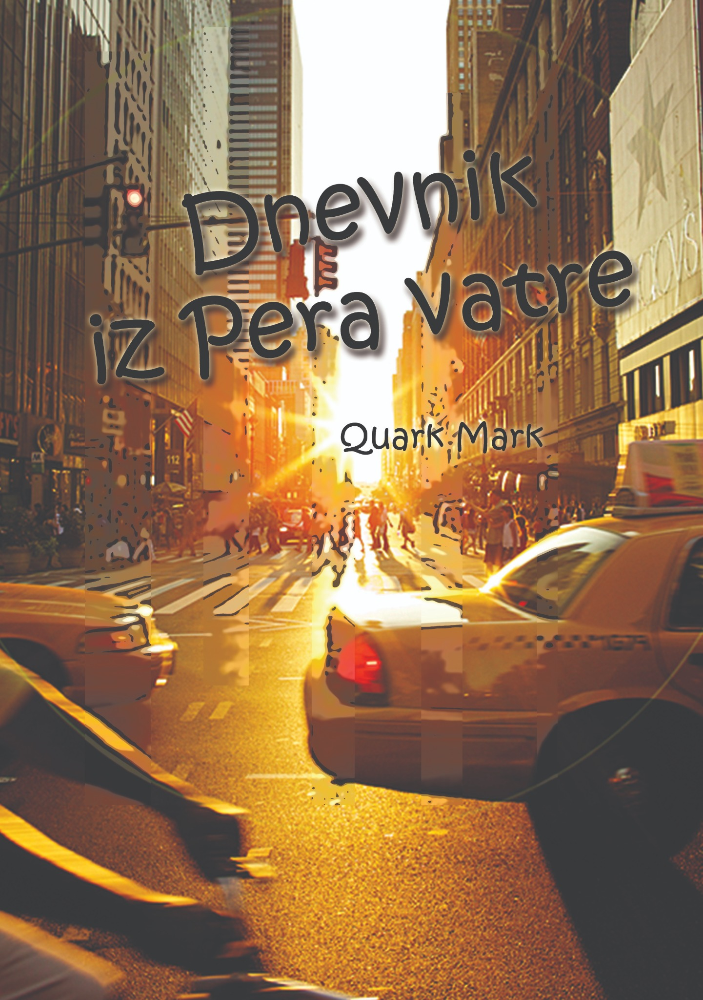
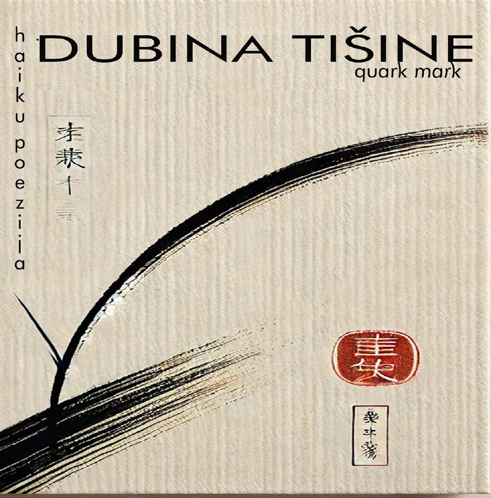
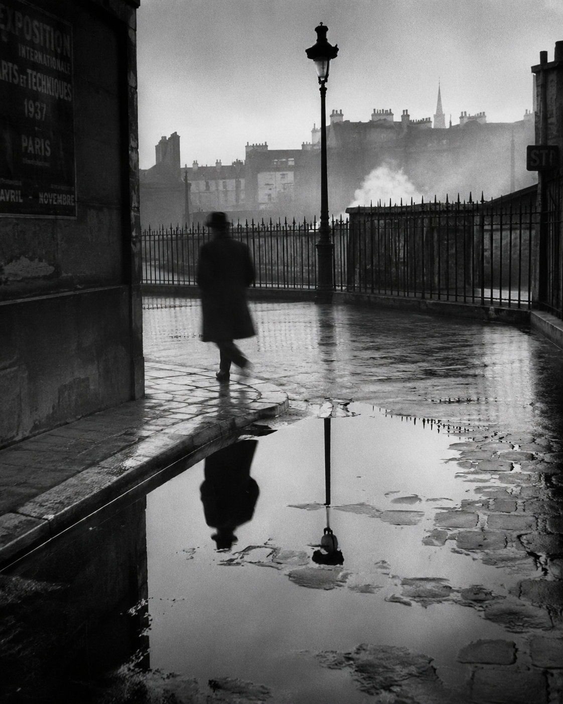
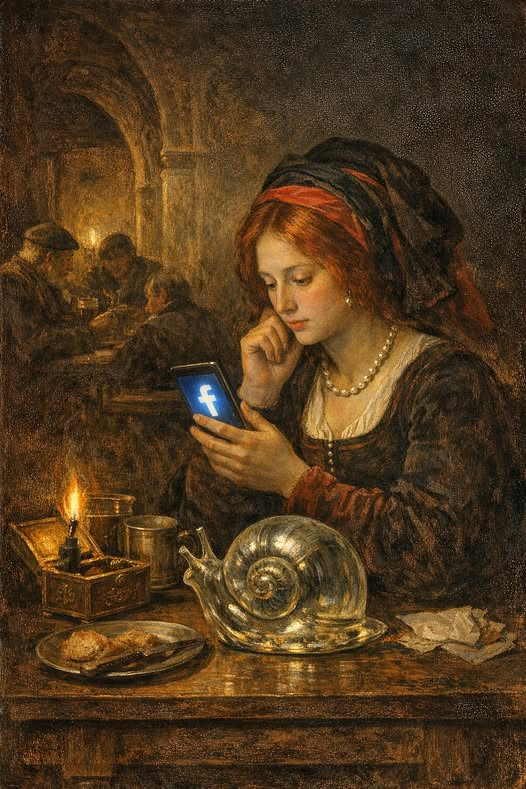

已出版 · 2023
《火焰之笔日记》
Quark Mark 于2023年在贝尔格莱德出版的文学作品集。ISBN 978-86-905164-0-7 · COBISS.SR-ID 109781257。
Quark Mark
已出版的小说、俳句、创作中的长篇小说，以及后来可能进入声音和影像的文学系列。

已出版 · 2023
Quark Mark 于2023年在贝尔格莱德出版的文学作品集。ISBN 978-86-905164-0-7 · COBISS.SR-ID 109781257。


创作中的长篇小说
1932年的巴黎。那是整个世界开始崩塌之前的一年。一位塞尔维亚作家的日记——曾经的█████、未来的记者、永恒的异乡人——穿过禁忌之爱、秘密社团，以及一个问题：究竟是谁在书写，又是谁正在被书写？
